Exploring interactions with continuous predictors in regression models
Jacob Long
2022-04-11
Source:vignettes/interactions.Rmd
interactions.Rmd##
## Attaching package: 'interactions'## The following objects are masked from 'package:jtools':
##
## cat_plot, interact_plot, johnson_neyman, probe_interaction,
## sim_slopesUnderstanding an interaction effect in a linear regression model is usually difficult when using just the basic output tables and looking at the coefficients. The interactions package provides several functions that can help analysts probe more deeply.
Categorical by categorical interactions: All the tools described here require at least one variable to be continuous. A separate vignette describes cat_plot, which handles the plotting of interactions in which all the focal predictors are categorical variables.
First, we use example data from state.x77 that is built into R. Let’s look at the interaction model output with summ as a starting point.
library(jtools) # for summ()
states <- as.data.frame(state.x77)
fiti <- lm(Income ~ Illiteracy * Murder + `HS Grad`, data = states)
summ(fiti)## MODEL INFO:
## Observations: 50
## Dependent Variable: Income
## Type: OLS linear regression
##
## MODEL FIT:
## F(4,45) = 10.65, p = 0.00
## R² = 0.49
## Adj. R² = 0.44
##
## Standard errors: OLS
## ----------------------------------------------------------
## Est. S.E. t val. p
## ----------------------- --------- -------- -------- ------
## (Intercept) 1414.46 737.84 1.92 0.06
## Illiteracy 753.07 385.90 1.95 0.06
## Murder 130.60 44.67 2.92 0.01
## HS Grad 40.76 10.92 3.73 0.00
## Illiteracy:Murder -97.04 35.86 -2.71 0.01
## ----------------------------------------------------------Our interaction term is significant, suggesting some more probing is warranted to see what’s going on. It’s worth recalling that you shouldn’t focus too much on the main effects of terms included in the interaction since they are conditional on the other variable(s) in the interaction being held constant at 0.
Plotting interactions
A versatile and sometimes the most interpretable method for understanding interaction effects is via plotting. interactions provides interact_plot as a relatively pain-free method to get good-looking plots of interactions using ggplot2 on the backend.
interact_plot(fiti, pred = Illiteracy, modx = Murder)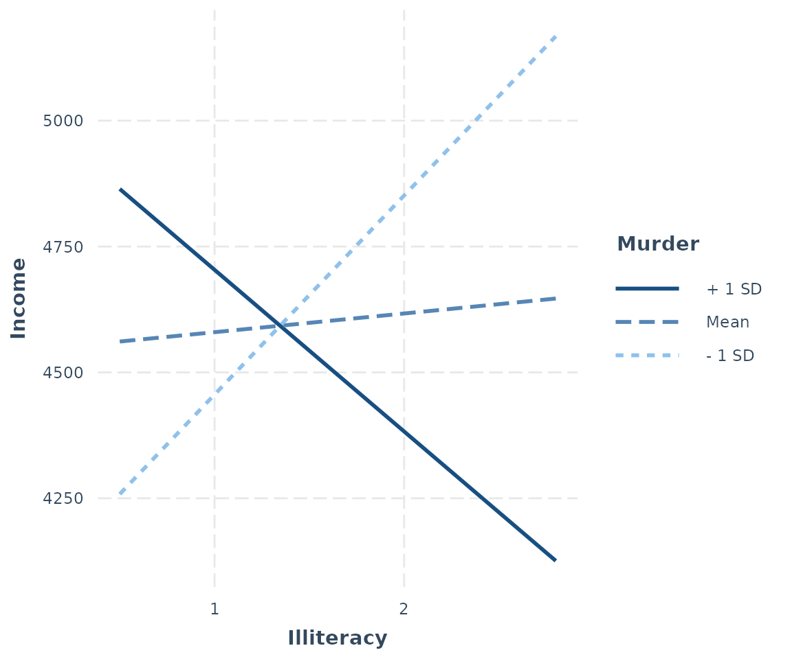
Keep in mind that the default behavior of interact_plot is to mean-center all continuous variables not involved in the interaction so that the predicted values are more easily interpreted. You can disable that by adding centered = "none". You can choose specific variables by providing their names in a vector to the centered argument.
By default, with a continuous moderator you get three lines — 1 standard deviation above and below the mean and the mean itself. If you specify modx.values = "plus-minus", the mean of the moderator is not plotted, just the two +/- SD lines. You may also choose "terciles" to split the data into three equal-sized groups — representing the upper, middle, and lower thirds of the distribution of the moderator — and get the line that represents the median of the moderator within each of those groups.
If your moderator is a factor, each level will be plotted and you should leave modx.values = NULL, the default.
fitiris <- lm(Petal.Length ~ Petal.Width * Species, data = iris)
interact_plot(fitiris, pred = Petal.Width, modx = Species)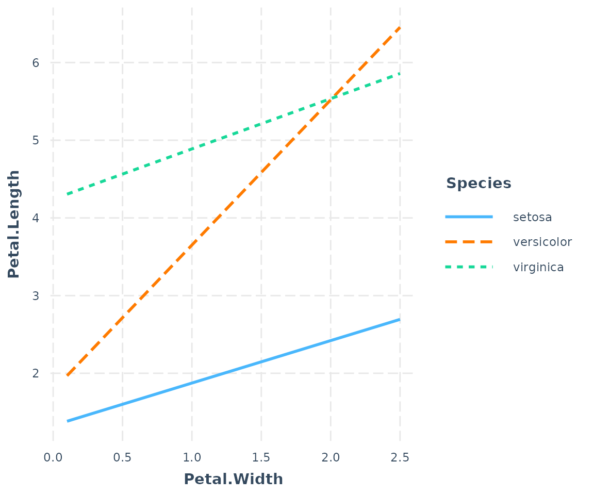
If you want, you can specify a subset of a factor’s levels via the modx.values argument:
interact_plot(fitiris, pred = Petal.Width, modx = Species,
modx.values = c("versicolor", "virginica"))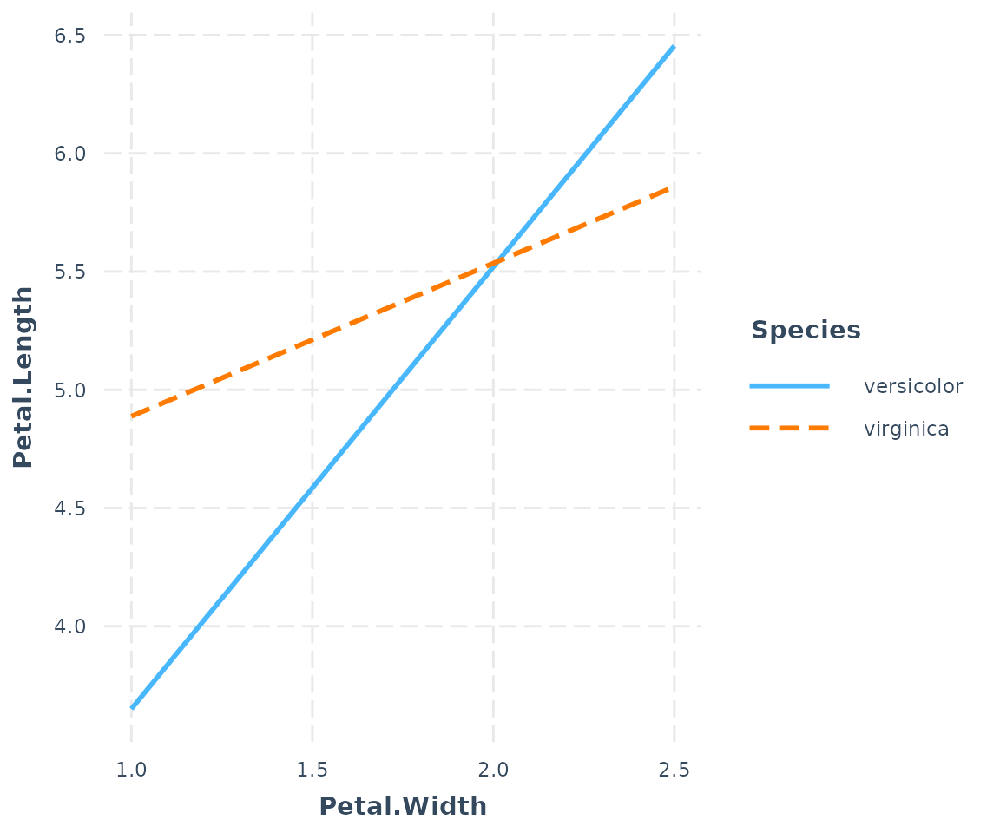
Plotting observed data
If you want to see the individual data points plotted to better understand how the fitted lines related to the observed data, you can use the plot.points = TRUE argument.
interact_plot(fiti, pred = Illiteracy, modx = Murder, plot.points = TRUE)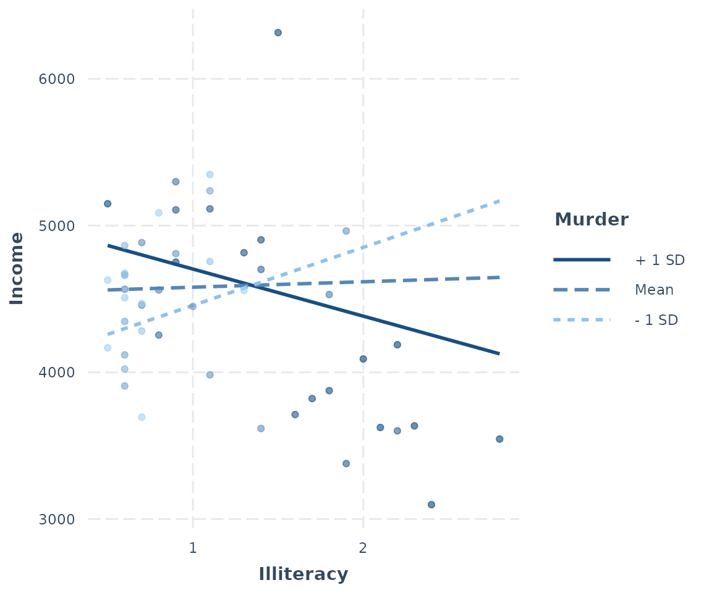
For continuous moderators, as you can see, the observed data points are shaded depending on the level of the moderator variable.
It can be very enlightening, too, for categorical moderators.
interact_plot(fitiris, pred = Petal.Width, modx = Species,
plot.points = TRUE)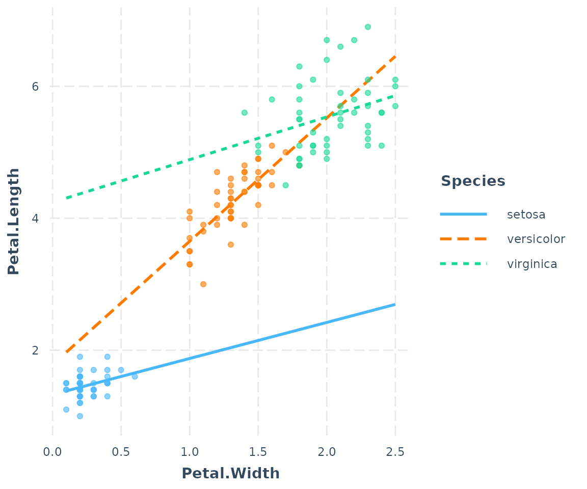
Where many points are slightly overlapping as they do here, it can be useful to apply a random “jitter” to move them slightly to stop the overlap. Use the jitter argument to do this. If you provide a single number it will apply a jitter of proportional magnitude both sideways and up and down. If you provide a vector length 2, then the first is assumed to refer to the left/right jitter and the second to the up/down jitter.
If you would like to better differentiate the points with factor moderators, you can use point.shape = TRUE to give a different shape to each point. This can be especially helpful for black and white publications.
interact_plot(fitiris, pred = Petal.Width, modx = Species,
plot.points = TRUE, jitter = 0.1, point.shape = TRUE)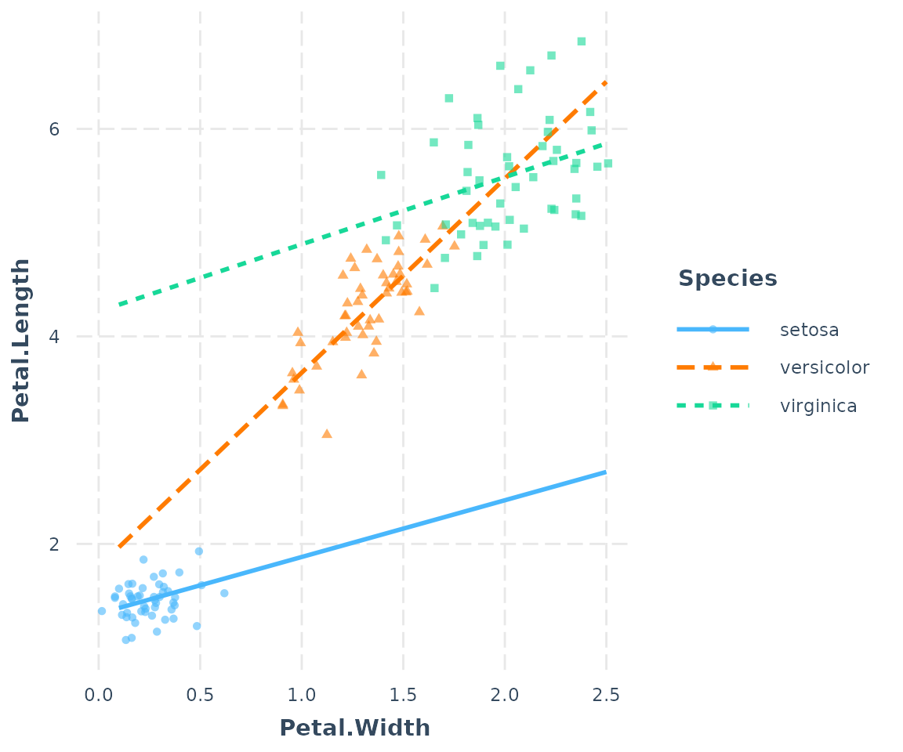
If your original data are weighted, then the points will be sized based on the weight. For the purposes of our example, we’ll weight the same model we’ve been using with the population of each state.
fiti <- lm(Income ~ Illiteracy * Murder, data = states,
weights = Population)
interact_plot(fiti, pred = Illiteracy, modx = Murder, plot.points = TRUE)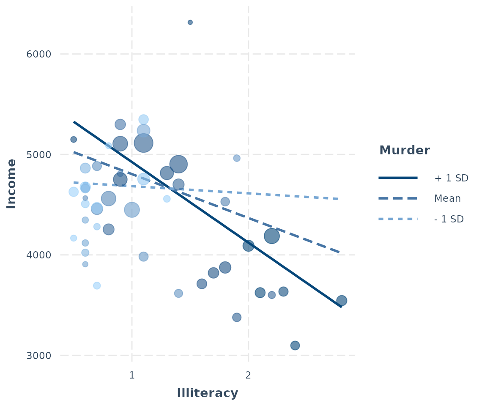
For those working with weighted data, it can be hard to use a scatterplot to explore the data unless there is some way to account for the weights. Using size is a nice middle ground.
Plotting partial residuals
In more complex regressions, plotting the observed data can sometimes be relatively uninformative because the points seem to be all over the place.
For an example, let’s take a look at this model. I am using the mpg dataset from ggplot2 and predicting the city miles per gallon (cty) based on several variables, including model year, type of car, fuel type, drive type, and an interaction between engine displacement (displ) and number of cylinders in the engine (cyl). Let’s take a look at the regression output:
library(ggplot2)
data(cars)
fitc <- lm(cty ~ year + cyl * displ + class + fl + drv, data = mpg)
summ(fitc)## MODEL INFO:
## Observations: 234
## Dependent Variable: cty
## Type: OLS linear regression
##
## MODEL FIT:
## F(16,217) = 99.73, p = 0.00
## R² = 0.88
## Adj. R² = 0.87
##
## Standard errors: OLS
## -------------------------------------------------------
## Est. S.E. t val. p
## --------------------- --------- ------- -------- ------
## (Intercept) -200.98 47.01 -4.28 0.00
## year 0.12 0.02 5.03 0.00
## cyl -1.86 0.28 -6.69 0.00
## displ -3.56 0.66 -5.41 0.00
## classcompact -2.60 0.93 -2.80 0.01
## classmidsize -2.63 0.93 -2.82 0.01
## classminivan -4.41 1.04 -4.24 0.00
## classpickup -4.37 0.93 -4.68 0.00
## classsubcompact -2.38 0.93 -2.56 0.01
## classsuv -4.27 0.87 -4.92 0.00
## fld 6.34 1.69 3.74 0.00
## fle -4.57 1.66 -2.75 0.01
## flp -1.92 1.59 -1.21 0.23
## flr -0.79 1.57 -0.50 0.61
## drvf 1.40 0.40 3.52 0.00
## drvr 0.49 0.46 1.06 0.29
## cyl:displ 0.36 0.08 4.56 0.00
## -------------------------------------------------------Okay, we are explaining a lot of variance here but there is quite a bit going on. Let’s plot the interaction with the observed data.
interact_plot(fitc, pred = displ, modx = cyl, plot.points = TRUE,
modx.values = c(4, 5, 6, 8))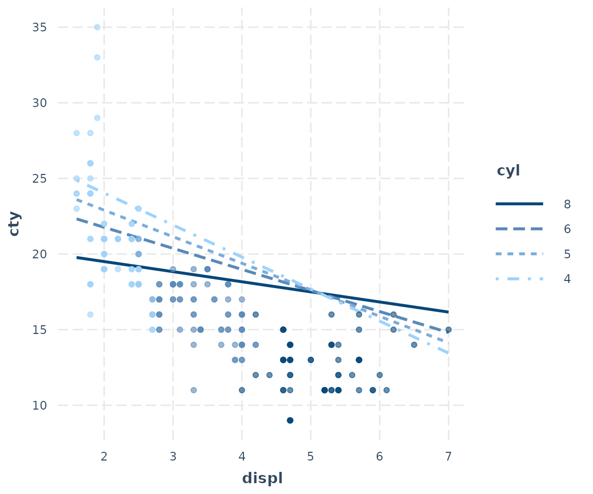
Hmm, doesn’t that look…bad? You can kind of see the pattern of the interaction, but the predicted lines don’t seem to match the data very well. But I included a lot of variables besides cyl and displ in this model and they may be accounting for some of this variation. This is what partial residual plots are designed to help with. You can learn more about the technique and theory in Fox and Weisberg (2018) and another place to generate partial residual plots is in Fox’s effects package.
Using the argument partial.residuals = TRUE, what is plotted instead is the observed data with the effects of all the control variables accounted for. In other words, the value cty for the observed data is based only on the values of displ, cyl, and the model error. Let’s take a look.
interact_plot(fitc, pred = displ, modx = cyl, partial.residuals = TRUE,
modx.values = c(4, 5, 6, 8))Now we can understand how the observed data and the model relate to each other much better. One insight is how the model really underestimates the values at the low end of displacement and cylinders. You can also see how much the cylinders and displacement seem to be correlated each other, which makes it difficult to say how much we can learn from this kind of model.
Confidence bands
Another way to get a sense of the precision of the estimates is by plotting confidence bands. To get started, just set interval = TRUE. To decide how wide the confidence interval should be, express the percentile as a number, e.g., int.width = 0.8 corresponds to an 80% interval.
interact_plot(fiti, pred = Illiteracy, modx = Murder, interval = TRUE,
int.width = 0.8)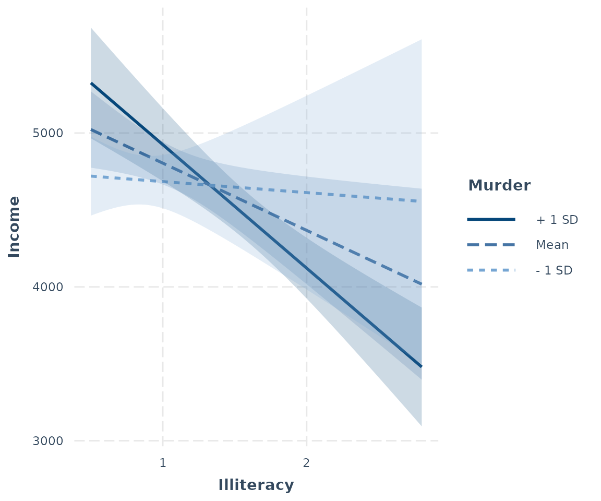
You can also use the robust argument to plot confidence intervals based on robust standard error calculations.
Check linearity assumption
A basic assumption of linear regression is that the relationship between the predictors and response variable is linear. When you have an interaction effect, you add the assumption that relationship between your predictor and response is linear regardless of the level of the moderator.
To show a striking example of how this can work, we’ll generate two simple datasets to replicate Hainmueller et al. (2017).
The first has a focal predictor \(X\) that is normally distributed with mean 3 and standard deviation 1. It then has a dichotomous moderator \(W\) that is Bernoulli distributed with mean probability 0.5. We also generate a normally distributed error term with standard deviation 4.
set.seed(99)
x <- rnorm(n = 200, mean = 3, sd = 1)
err <- rnorm(n = 200, mean = 0, sd = 4)
w <- rbinom(n = 200, size = 1, prob = 0.5)
y_1 <- 5 - 4*x - 9*w + 3*w*x + errWe fit a linear regression model with an interaction between x and w.
## MODEL INFO:
## Observations: 200
## Dependent Variable: y_1
## Type: OLS linear regression
##
## MODEL FIT:
## F(3,196) = 25.93, p = 0.00
## R² = 0.28
## Adj. R² = 0.27
##
## Standard errors: OLS
## ------------------------------------------------
## Est. S.E. t val. p
## ----------------- ------- ------ -------- ------
## (Intercept) 3.19 1.29 2.47 0.01
## x -3.59 0.42 -8.61 0.00
## w -7.77 1.90 -4.10 0.00
## x:w 2.86 0.62 4.62 0.00
## ------------------------------------------------In the following plot, we use linearity.check = TRUE argument to split the data by the level of the moderator \(W\) and plot predicted lines (black) and a loess line (red) within each group. The predicted lines come from the full data set. The loess line looks only at the subset of data in each pane and will be curved if the relationship is nonlinear. What we’re looking for is whether the red loess line is straight like the predicted line.
interact_plot(model_1, pred = x, modx = w, linearity.check = TRUE,
plot.points = TRUE)In this case, it is. That means the assumption is satisfied.
Now we generate similar data, but this time the linearity assumption will be violated. \(X_2\) will now be uniformly distributed across the range of -3 to 3. The true relationship between y_2 and \(X_2\) (x_2) is non-linear.
x_2 <- runif(n = 200, min = -3, max = 3)
y_2 <- 2.5 - x_2^2 - 5*w + 2*w*(x_2^2) + err
data_2 <- as.data.frame(cbind(x_2, y_2, w))
model_2 <- lm(y_2 ~ x_2 * w, data = data_2)
summ(model_2)## MODEL INFO:
## Observations: 200
## Dependent Variable: y_2
## Type: OLS linear regression
##
## MODEL FIT:
## F(3,196) = 3.28, p = 0.02
## R² = 0.05
## Adj. R² = 0.03
##
## Standard errors: OLS
## ------------------------------------------------
## Est. S.E. t val. p
## ----------------- ------- ------ -------- ------
## (Intercept) -0.75 0.49 -1.51 0.13
## x_2 0.53 0.30 1.77 0.08
## w 1.63 0.72 2.28 0.02
## x_2:w -0.25 0.42 -0.61 0.54
## ------------------------------------------------The regression output would lead us to believe there is no interaction.
Let’s do the linearity check:
interact_plot(model_2, pred = x_2, modx = w, linearity.check = TRUE,
plot.points = TRUE)This is a striking example of the assumption being violated. At both levels of \(W\), the relationship between \(X_2\) and the response is non-linear. There really is an interaction, but it’s a non-linear one.
You could try to fit this true model with the polynomial term like this:
## MODEL INFO:
## Observations: 200
## Dependent Variable: y_2
## Type: OLS linear regression
##
## MODEL FIT:
## F(5,194) = 18.32, p = 0.00
## R² = 0.32
## Adj. R² = 0.30
##
## Standard errors: OLS
## -----------------------------------------------------
## Est. S.E. t val. p
## --------------------- -------- ------ -------- ------
## (Intercept) -1.01 0.42 -2.41 0.02
## poly(x_2, 2)1 9.90 6.14 1.61 0.11
## poly(x_2, 2)2 -34.14 6.15 -5.55 0.00
## w 1.61 0.61 2.65 0.01
## poly(x_2, 2)1:w -6.33 8.60 -0.74 0.46
## poly(x_2, 2)2:w 75.58 8.62 8.77 0.00
## -----------------------------------------------------interact_plot can plot these kinds of effects, too. Just provide the untransformed predictor’s name (in this case, x_2) and also include the data in the data argument. If you don’t include the data, the function will try to find the data you used but it will warn you about it and it could cause problems under some circumstances.
interact_plot(model_3, pred = x_2, modx = w, data = data_2)Look familiar? Let’s do the linearity.check, which in this case is more like a non-linearity check:
interact_plot(model_3, pred = x_2, modx = w, data = data_2,
linearity.check = TRUE, plot.points = TRUE)The red loess line almost perfectly overlaps the black predicted line, indicating the assumption is satisfied. As a note of warning, in practice the lines will rarely overlap so neatly and you will have to make more difficult judgment calls.
Other options
There are a number of other options not mentioned, many relating to the appearance.
For instance, you can manually specify the axis labels, add a main title, choose a color scheme, and so on.
interact_plot(fiti, pred = Illiteracy, modx = Murder,
x.label = "Custom X Label", y.label = "Custom Y Label",
main.title = "Sample Plot", legend.main = "Custom Legend Title",
colors = "seagreen")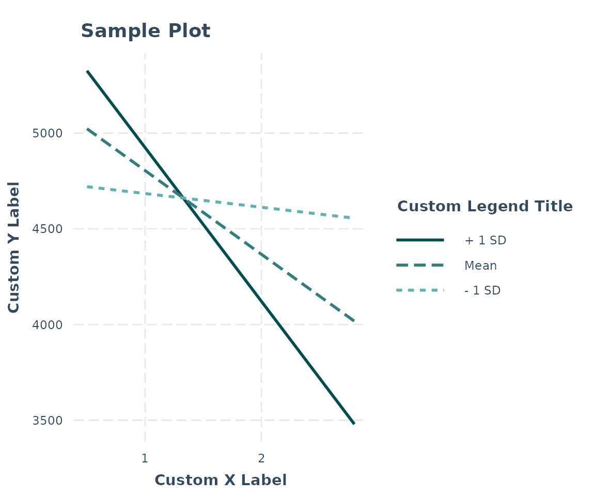
Because the function uses ggplot2, it can be modified and extended like any other ggplot2 object. For example, using the theme_apa function from jtools:
interact_plot(fitiris, pred = Petal.Width, modx = Species) + theme_apa()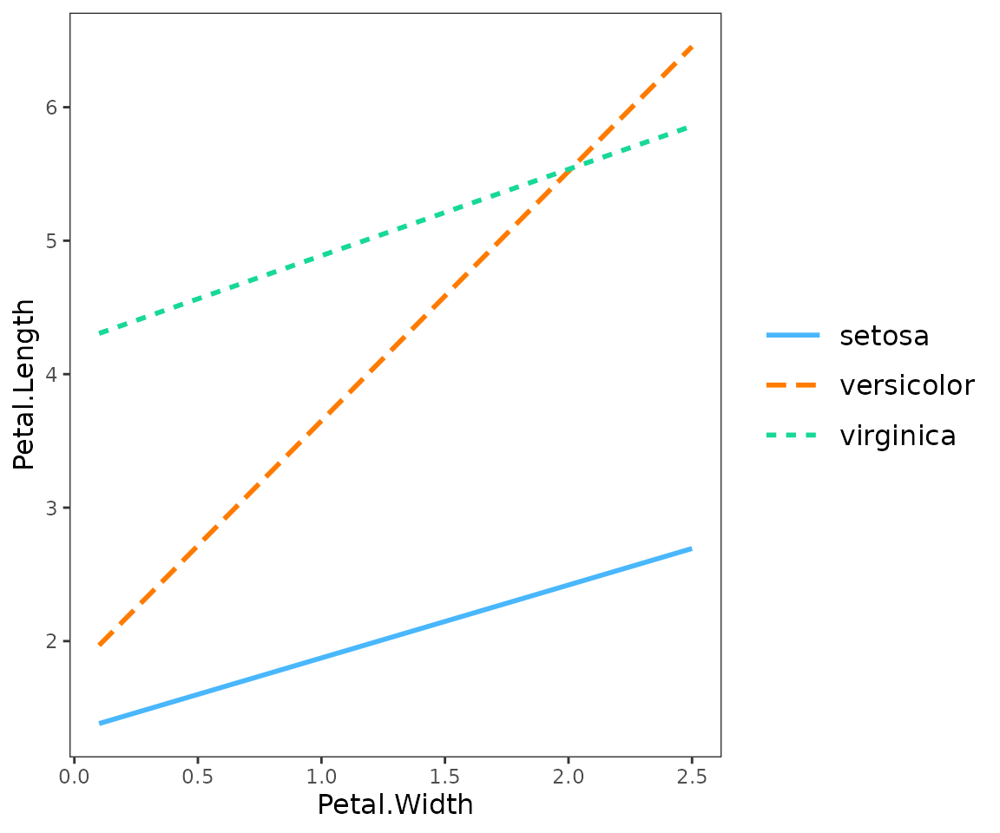
Simple slopes analysis and Johnson-Neyman intervals
Simple slopes analysis gives researchers a way to express the interaction effect in terms that are easy to understand to those who know how to interpret direct effects in regression models. This method is designed for continuous variable by continuous variable interactions, but can work when the moderator is binary.
In simple slopes analysis, researchers are interested in the conditional slope of the focal predictor; that is, what is the slope of the predictor when the moderator is held at some particular value? The regression output we get when including the interaction term tells us what the slope is when the moderator is held at zero, which is often not a practically/theoretically meaningful value. To better understand the nature of the interaction, simple slopes analysis allows the researcher to specify meaningful values at which to hold the moderator value.
While the computation behind doing so isn’t exactly rocket science, it is inconvenient and prone to error. The sim_slopes function from interactions accepts a regression model (with an interaction term) as an input and automates the simple slopes procedure. The function will, by default, do the following:
- Mean-center all non-focal predictors (so that setting them to zero means setting them to their mean)
- For continuous moderators, it will choose the mean as well as the mean plus/minus 1 standard deviation as values at which to find the slope of the focal predictor.
- For categorical/binary moderators, it will find the slope of the focal predictor at each level of the moderator.
In its most basic use case, sim_slopes needs three arguments: a regression model, the name of the focal predictor as the argument for pred =, and the name of the moderator as the argument for modx =. Let’s go through an example.
Now let’s do the most basic simple slopes analysis:
sim_slopes(fiti, pred = Illiteracy, modx = Murder, johnson_neyman = FALSE)## SIMPLE SLOPES ANALYSIS
##
## Slope of Illiteracy when Murder = 5.420973 (- 1 SD):
##
## Est. S.E. t val. p
## -------- -------- -------- ------
## -71.59 268.65 -0.27 0.79
##
## Slope of Illiteracy when Murder = 8.685043 (Mean):
##
## Est. S.E. t val. p
## --------- -------- -------- ------
## -437.12 175.82 -2.49 0.02
##
## Slope of Illiteracy when Murder = 11.949113 (+ 1 SD):
##
## Est. S.E. t val. p
## --------- -------- -------- ------
## -802.66 145.72 -5.51 0.00So what we see in this example is that when the value of Murder is high, the slope of Illiteracy is negative and significantly different from zero. The value for Illiteracy when Murder is high is in the opposite direction from its coefficient estimate for the first version of the model fit with lm but this result makes sense considering the interaction coefficient was negative; it means that as one of the variables goes up, the other goes down. Now we know the effect of Illiteracy only exists when Murder is high.
You may also choose the values of the moderator yourself with the modx.values = argument.
sim_slopes(fiti, pred = Illiteracy, modx = Murder, modx.values = c(0, 5, 10),
johnson_neyman = FALSE)## SIMPLE SLOPES ANALYSIS
##
## Slope of Illiteracy when Murder = 0.00:
##
## Est. S.E. t val. p
## -------- -------- -------- ------
## 535.50 458.77 1.17 0.25
##
## Slope of Illiteracy when Murder = 5.00:
##
## Est. S.E. t val. p
## -------- -------- -------- ------
## -24.44 282.48 -0.09 0.93
##
## Slope of Illiteracy when Murder = 10.00:
##
## Est. S.E. t val. p
## --------- -------- -------- ------
## -584.38 152.37 -3.84 0.00Bear in mind that these estimates are managed by refitting the models. If the model took a long time to fit the first time, expect a long run time for sim_slopes.
Visualize the coefficients
Similar to what this package’s plot_coefs/plot_summs functions offer, you can save your sim_slopes output to an object and call plot on that object.
ss <- sim_slopes(fiti, pred = Illiteracy, modx = Murder,
modx.values = c(0, 5, 10))
plot(ss)Tabular output
You can also use the huxtable package to get a publication-style table from your sim_slopes output.
ss <- sim_slopes(fiti, pred = Illiteracy, modx = Murder,
modx.values = c(0, 5, 10))
library(huxtable)
as_huxtable(ss)| Value of Murder | Slope of Illiteracy |
| Value of Murder | slope |
|---|---|
| 0.00 | 535.50 (458.77) |
| 5.00 | -24.44 (282.48) |
| 10.00 | -584.38 (152.37)*** |
Johnson-Neyman intervals
Did you notice how I was adding the argument johnson_neyman = FALSE above? That’s because by default, sim_slopes will also calculate what is called the Johnson-Neyman interval. This tells you all the values of the moderator for which the slope of the predictor will be statistically significant. Depending on the specific analysis, it may be that all values of the moderator outside of the interval will have a significant slope for the predictor. Other times, it will only be values inside the interval—you will have to look at the output to see.
It can take a moment to interpret this correctly if you aren’t familiar with the Johnson-Neyman technique. But if you read the output carefully and take it literally, you’ll get the hang of it.
sim_slopes(fiti, pred = Illiteracy, modx = Murder, johnson_neyman = TRUE)## JOHNSON-NEYMAN INTERVAL
##
## When Murder is OUTSIDE the interval [-10.61, 8.16], the slope of
## Illiteracy is p < .05.
##
## Note: The range of observed values of Murder is [1.40, 15.10]
##
## SIMPLE SLOPES ANALYSIS
##
## Slope of Illiteracy when Murder = 5.420973 (- 1 SD):
##
## Est. S.E. t val. p
## -------- -------- -------- ------
## -71.59 268.65 -0.27 0.79
##
## Slope of Illiteracy when Murder = 8.685043 (Mean):
##
## Est. S.E. t val. p
## --------- -------- -------- ------
## -437.12 175.82 -2.49 0.02
##
## Slope of Illiteracy when Murder = 11.949113 (+ 1 SD):
##
## Est. S.E. t val. p
## --------- -------- -------- ------
## -802.66 145.72 -5.51 0.00In the example above, we can see that the Johnson-Neyman interval and the simple slopes analysis agree—they always will. The benefit of the J-N interval is it will tell you exactly where the predictor’s slope becomes significant/insignificant at a specified alpha level.
You can also call the johnson_neyman function directly if you want to do something like tweak the alpha level. The johnson_neyman function will also create a plot by default — you can get them by setting jnplot = TRUE with sim_slopes.
johnson_neyman(fiti, pred = Illiteracy, modx = Murder, alpha = .05)## JOHNSON-NEYMAN INTERVAL
##
## When Murder is OUTSIDE the interval [-10.61, 8.16], the slope of
## Illiteracy is p < .05.
##
## Note: The range of observed values of Murder is [1.40, 15.10]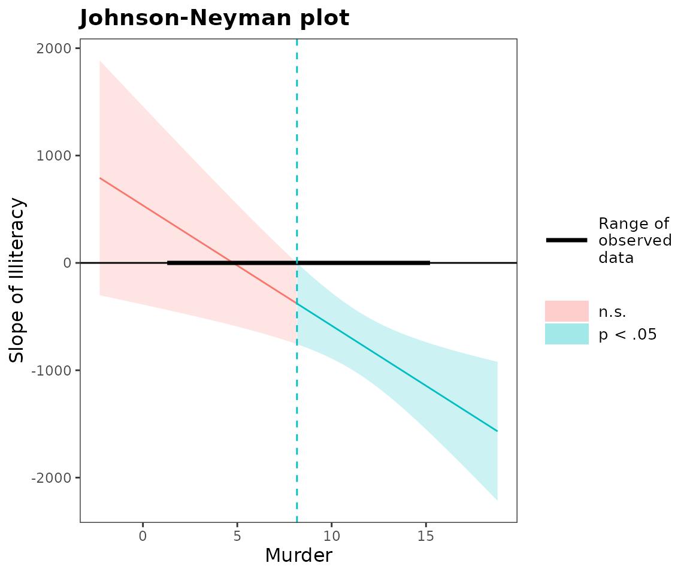
A note on Johnson-Neyman plots: Once again, it is easy to misinterpret the meaning. Notice that the y-axis is the conditional slope of the predictor. The plot shows you where the conditional slope differs significantly from zero. In the plot above, we see that from the point Murder (the moderator) = 9.12 and greater, the slope of Illiteracy (the predictor) is significantly different from zero and in this case negative. The lower bound for this interval (about -32) is so far outside the observed data that it is not plotted. If you could have -32 as a value for Murder rate, though, that would be the other threshold before which the slope of Illiteracy would become positive.
The purpose of reminding you both within the plot and the printed output of the range of observed data is to help you put the results in context; in this case, the only justifiable interpretation is that Illiteracy has no effect on the outcome variable except when Murder is higher than 8.16. You wouldn’t interpret the lower boundary because your dataset doesn’t contain any values near it.
False discovery rate adjustment
A recent publication (Esarey & Sumner, 2017) explored ways to calculate the Johnson-Neyman interval that properly manages the Type I and II error rates. Others have noted that the alpha level implied by the Johnson-Neyman interval won’t be quite right (e.g., Bauer & Curran, 2005), but there hasn’t been any general solution that has gotten wide acceptance in the research literature just yet.
The basic problem is that the Johnson-Neyman interval is essentially doing a bunch of comparisons across all the values of the moderator, each one inflating the Type I error rate. The issue isn’t so much that you can’t possibly address it, but many solutions are far too conservative and others aren’t broadly applicable. Esarey and Sumner (2017), among other contributions, suggested an adjustment that seems to do a good job of balancing the desire to be a conservative test without missing a lot of true effects in the process. I won’t go into the details here. The implementation in johnson_neyman is based on code adapted from Esarey and Sumner’s interactionTest package, but any errors should be assumed to be from interactions, not them.
To use this feature, simply set control.fdr = TRUE in the call to johnson_neyman or sim_slopes.
sim_slopes(fiti, pred = Illiteracy, modx = Murder, johnson_neyman = TRUE,
control.fdr = TRUE)## JOHNSON-NEYMAN INTERVAL
##
## When Murder is OUTSIDE the interval [-22.57, 8.52], the slope of
## Illiteracy is p < .05.
##
## Note: The range of observed values of Murder is [1.40, 15.10]
##
## Interval calculated using false discovery rate adjusted t = 2.33
##
## SIMPLE SLOPES ANALYSIS
##
## Slope of Illiteracy when Murder = 5.420973 (- 1 SD):
##
## Est. S.E. t val. p
## -------- -------- -------- ------
## -71.59 268.65 -0.27 0.79
##
## Slope of Illiteracy when Murder = 8.685043 (Mean):
##
## Est. S.E. t val. p
## --------- -------- -------- ------
## -437.12 175.82 -2.49 0.02
##
## Slope of Illiteracy when Murder = 11.949113 (+ 1 SD):
##
## Est. S.E. t val. p
## --------- -------- -------- ------
## -802.66 145.72 -5.51 0.00In this case, you can see that the interval is just a little bit wider. The output reports the adjusted test statistic, which is 2.33, not much different than the (approximately) 2 that would be used otherwise. In other cases it may be quite a bit larger.
Additional options
Conditional intercepts
Sometimes it is informative to know the conditional intercepts in addition to the slopes. It might be interesting to you that individuals low on the moderator have a positive slope and individuals high on it don’t, but that doesn’t mean that individuals low on the moderator will have higher values of the dependent variable. You would only know that if you know the conditional intercept. Plotting is an easy way to notice this, but you can do it with the console output as well.
You can print the conditional intercepts with the cond.int = TRUE argument.
sim_slopes(fiti, pred = Illiteracy, modx = Murder, cond.int = TRUE)## JOHNSON-NEYMAN INTERVAL
##
## When Murder is OUTSIDE the interval [-10.61, 8.16], the slope of
## Illiteracy is p < .05.
##
## Note: The range of observed values of Murder is [1.40, 15.10]
##
## SIMPLE SLOPES ANALYSIS
##
## When Murder = 5.420973 (- 1 SD):
##
## Est. S.E. t val. p
## --------------------------- --------- -------- -------- ------
## Slope of Illiteracy -71.59 268.65 -0.27 0.79
## Conditional intercept 4667.28 125.81 37.10 0.00
##
## When Murder = 8.685043 (Mean):
##
## Est. S.E. t val. p
## --------------------------- --------- -------- -------- ------
## Slope of Illiteracy -437.12 175.82 -2.49 0.02
## Conditional intercept 4700.46 72.13 65.16 0.00
##
## When Murder = 11.949113 (+ 1 SD):
##
## Est. S.E. t val. p
## --------------------------- --------- -------- -------- ------
## Slope of Illiteracy -802.66 145.72 -5.51 0.00
## Conditional intercept 4733.63 95.05 49.80 0.00This example shows you that while the slope associated with Illiteracy is negative when Murder is high, the conditional intercept is also high when Murder is high. That tells you that increases in Illiteracy for high-Murder observations will tend towards being equal on Income to observations with lower values of Murder.
Robust standard errors
Certain models require heteroskedasticity-robust standard errors. To be consistent with the reporting of heteroskedasticity-robust standard errors offered by summ, sim_slopes will do the same with the use of the robust option so you can consistently report standard errors across models.
sim_slopes(fiti, pred = Illiteracy, modx = Murder, robust = "HC3")## JOHNSON-NEYMAN INTERVAL
##
## When Murder is OUTSIDE the interval [-6.13, 8.31], the slope of
## Illiteracy is p < .05.
##
## Note: The range of observed values of Murder is [1.40, 15.10]
##
## SIMPLE SLOPES ANALYSIS
##
## Slope of Illiteracy when Murder = 5.420973 (- 1 SD):
##
## Est. S.E. t val. p
## -------- -------- -------- ------
## -71.59 256.60 -0.28 0.78
##
## Slope of Illiteracy when Murder = 8.685043 (Mean):
##
## Est. S.E. t val. p
## --------- -------- -------- ------
## -437.12 191.07 -2.29 0.03
##
## Slope of Illiteracy when Murder = 11.949113 (+ 1 SD):
##
## Est. S.E. t val. p
## --------- -------- -------- ------
## -802.66 178.75 -4.49 0.00These data are a relatively rare case in which the robust standard errors are even more efficient than typical OLS standard errors. Note that you must have the sandwich package installed to use this feature.
Centering variables
By default, all non-focal variables are mean-centered. You may also request that no variables be centered with centered = "none". You may also request specific variables to center by providing a vector of quoted variable names — no others will be centered in that case.
Note that the moderator is centered around the specified values. Factor variables are ignored in the centering process and just held at their observed values.
Do simple slopes and plotting with one function
You won’t have to use these functions long before you may find yourself using both of them for each model you want to explore. To streamline the process, this package offers probe_interaction() as a convenience function that calls both sim_slopes() and interact_plot(), taking advantage of their overlapping syntax.
library(survey)
data(api)
dstrat <- svydesign(id = ~1, strata = ~stype, weights = ~pw,
data = apistrat, fpc = ~fpc)
regmodel <- svyglm(api00 ~ avg.ed * growth, design = dstrat)
probe_interaction(regmodel, pred = growth, modx = avg.ed, cond.int = TRUE,
interval = TRUE, jnplot = TRUE)## JOHNSON-NEYMAN INTERVAL
##
## When avg.ed is OUTSIDE the interval [3.11, 5.78], the slope of
## growth is p < .05.
##
## Note: The range of observed values of avg.ed is [1.38, 4.44]## SIMPLE SLOPES ANALYSIS
##
## When avg.ed = 2.085002 (- 1 SD):
##
## Est. S.E. t val. p
## --------------------------- -------- ------ -------- ------
## Slope of growth 1.05 0.19 5.66 0.00
## Conditional intercept 555.73 8.12 68.47 0.00
##
## When avg.ed = 2.787381 (Mean):
##
## Est. S.E. t val. p
## --------------------------- -------- ------ -------- ------
## Slope of growth 0.58 0.15 3.80 0.00
## Conditional intercept 658.78 5.54 119.00 0.00
##
## When avg.ed = 3.489761 (+ 1 SD):
##
## Est. S.E. t val. p
## --------------------------- -------- ------ -------- ------
## Slope of growth 0.11 0.25 0.43 0.67
## Conditional intercept 761.83 7.55 100.89 0.00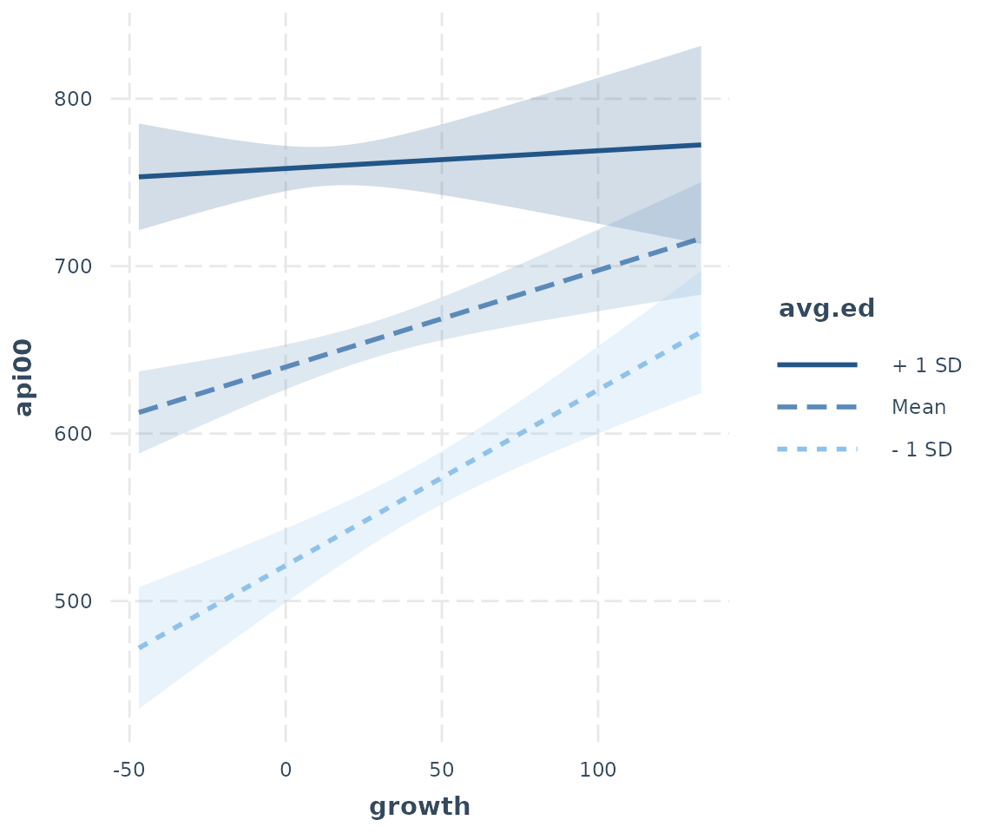
Note in the above example that you can provide arguments that only apply to one function and they will be used appropriately. On the other hand, you cannot apply their overlapping functions selectively. That is, you can’t have one centered = "all" and the other centered = "none". If you want that level of control, just call each function separately.
It returns an object with each of the two functions’ return objects:
out <- probe_interaction(regmodel, pred = growth, modx = avg.ed,
cond.int = TRUE, interval = TRUE, jnplot = TRUE)
names(out)## [1] "simslopes" "interactplot"Also, the above example comes from the survey package as a means to show that, yes, these tools can be used with svyglm objects. It is also tested with glm, merMod, and rq models, though you should always do your homework to decide whether these procedures are appropriate in those cases.
3-way interactions
If 2-way interactions can be hard to grasp by looking at regular regression output, then 3-way interactions are outright inscrutable. The aforementioned functions also support 3-way interactions, however. Plotting these effects is particularly helpful.
Note that Johnson-Neyman intervals are still provided, but only insofar as you get the intervals for chosen levels of the second moderator. This does go against some of the distinctiveness of the J-N technique, which for 2-way interactions is a way to avoid having to choose points of the moderator to check whether the predictor has a significant slope.
fita3 <- lm(rating ~ privileges * critical * learning, data = attitude)
probe_interaction(fita3, pred = critical, modx = learning, mod2 = privileges,
alpha = .1)## █████████████ While privileges (2nd moderator) = 40.89790 (- 1 SD) █████████████
##
## JOHNSON-NEYMAN INTERVAL
##
## When learning is INSIDE the interval [49.48, 161.86], the slope of
## critical is p < .1.
##
## Note: The range of observed values of learning is [34.00, 75.00]
##
## SIMPLE SLOPES ANALYSIS
##
## Slope of critical when learning = 44.62965 (- 1 SD):
##
## Est. S.E. t val. p
## ------ ------ -------- ------
## 0.24 0.24 1.02 0.32
##
## Slope of critical when learning = 56.36667 (Mean):
##
## Est. S.E. t val. p
## ------ ------ -------- ------
## 0.68 0.33 2.05 0.05
##
## Slope of critical when learning = 68.10368 (+ 1 SD):
##
## Est. S.E. t val. p
## ------ ------ -------- ------
## 1.11 0.55 2.01 0.06
##
## ██████████████ While privileges (2nd moderator) = 53.13333 (Mean) ██████████████
##
## JOHNSON-NEYMAN INTERVAL
##
## The Johnson-Neyman interval could not be found. Is the p value for your
## interaction term below the specified alpha?
##
## SIMPLE SLOPES ANALYSIS
##
## Slope of critical when learning = 44.62965 (- 1 SD):
##
## Est. S.E. t val. p
## ------ ------ -------- ------
## 0.09 0.34 0.27 0.79
##
## Slope of critical when learning = 56.36667 (Mean):
##
## Est. S.E. t val. p
## ------ ------ -------- ------
## 0.06 0.24 0.24 0.81
##
## Slope of critical when learning = 68.10368 (+ 1 SD):
##
## Est. S.E. t val. p
## ------ ------ -------- ------
## 0.02 0.33 0.07 0.95
##
## █████████████ While privileges (2nd moderator) = 65.36876 (+ 1 SD) █████████████
##
## JOHNSON-NEYMAN INTERVAL
##
## The Johnson-Neyman interval could not be found. Is the p value for your
## interaction term below the specified alpha?
##
## SIMPLE SLOPES ANALYSIS
##
## Slope of critical when learning = 44.62965 (- 1 SD):
##
## Est. S.E. t val. p
## ------- ------ -------- ------
## -0.06 0.61 -0.09 0.93
##
## Slope of critical when learning = 56.36667 (Mean):
##
## Est. S.E. t val. p
## ------- ------ -------- ------
## -0.56 0.50 -1.12 0.28
##
## Slope of critical when learning = 68.10368 (+ 1 SD):
##
## Est. S.E. t val. p
## ------- ------ -------- ------
## -1.06 0.66 -1.62 0.12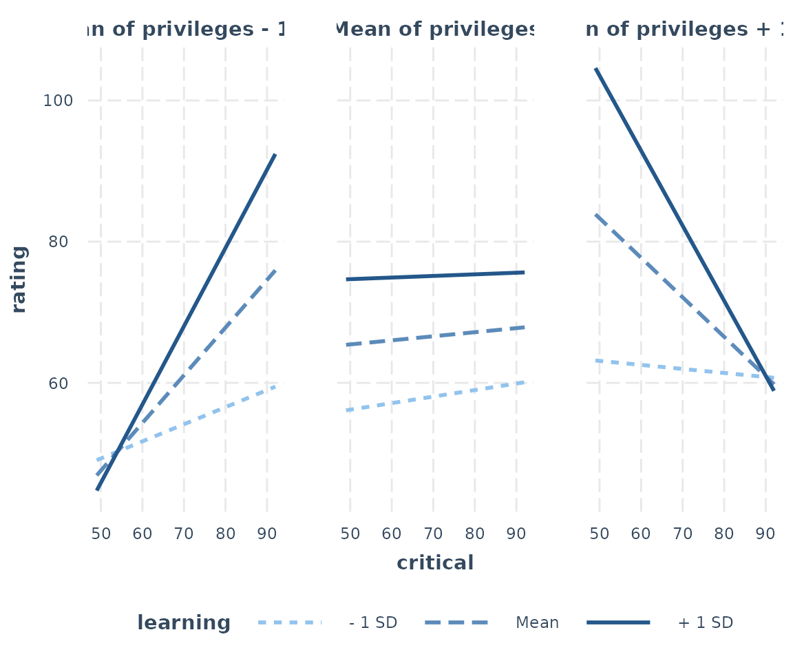
You can change the labels for each plot via the mod2.labels argument.
And don’t forget that you can use theme_apa to format for publications or just to make more economical use of space.
mtcars$cyl <- factor(mtcars$cyl,
labels = c("4 cylinder", "6 cylinder", "8 cylinder"))
fitc3 <- lm(mpg ~ hp * wt * cyl, data = mtcars)
interact_plot(fitc3, pred = hp, modx = wt, mod2 = cyl) +
theme_apa(legend.pos = "bottomright")You can get Johnson-Neyman plots for 3-way interactions as well, but keep in mind what I mentioned earlier in this section about the J-N technique for 3-way interactions. You will also need the cowplot package, which is used on the backend to mush together the separate J-N plots.
regmodel3 <- svyglm(api00 ~ avg.ed * growth * enroll, design = dstrat)
sim_slopes(regmodel3, pred = growth, modx = avg.ed, mod2 = enroll,
jnplot = TRUE)## ███████████████ While enroll (2nd moderator) = 153.0518 (- 1 SD) ██████████████
##
## JOHNSON-NEYMAN INTERVAL
##
## When avg.ed is OUTSIDE the interval [2.75, 3.82], the slope of
## growth is p < .05.
##
## Note: The range of observed values of avg.ed is [1.38, 4.44]
##
## SIMPLE SLOPES ANALYSIS
##
## Slope of growth when avg.ed = 2.085002 (- 1 SD):
##
## Est. S.E. t val. p
## ------ ------ -------- ------
## 1.25 0.32 3.86 0.00
##
## Slope of growth when avg.ed = 2.787381 (Mean):
##
## Est. S.E. t val. p
## ------ ------ -------- ------
## 0.39 0.22 1.75 0.08
##
## Slope of growth when avg.ed = 3.489761 (+ 1 SD):
##
## Est. S.E. t val. p
## ------- ------ -------- ------
## -0.48 0.35 -1.37 0.17
##
## ████████████████ While enroll (2nd moderator) = 595.2821 (Mean) ███████████████
##
## JOHNSON-NEYMAN INTERVAL
##
## When avg.ed is OUTSIDE the interval [2.84, 7.83], the slope of
## growth is p < .05.
##
## Note: The range of observed values of avg.ed is [1.38, 4.44]
##
## SIMPLE SLOPES ANALYSIS
##
## Slope of growth when avg.ed = 2.085002 (- 1 SD):
##
## Est. S.E. t val. p
## ------ ------ -------- ------
## 0.72 0.22 3.29 0.00
##
## Slope of growth when avg.ed = 2.787381 (Mean):
##
## Est. S.E. t val. p
## ------ ------ -------- ------
## 0.34 0.16 2.16 0.03
##
## Slope of growth when avg.ed = 3.489761 (+ 1 SD):
##
## Est. S.E. t val. p
## ------- ------ -------- ------
## -0.04 0.24 -0.16 0.87
##
## ███████████████ While enroll (2nd moderator) = 1037.5125 (+ 1 SD) ██████████████
##
## JOHNSON-NEYMAN INTERVAL
##
## The Johnson-Neyman interval could not be found. Is the p value for your
## interaction term below the specified alpha?
##
## SIMPLE SLOPES ANALYSIS
##
## Slope of growth when avg.ed = 2.085002 (- 1 SD):
##
## Est. S.E. t val. p
## ------ ------ -------- ------
## 0.18 0.31 0.58 0.56
##
## Slope of growth when avg.ed = 2.787381 (Mean):
##
## Est. S.E. t val. p
## ------ ------ -------- ------
## 0.29 0.20 1.49 0.14
##
## Slope of growth when avg.ed = 3.489761 (+ 1 SD):
##
## Est. S.E. t val. p
## ------ ------ -------- ------
## 0.40 0.27 1.49 0.14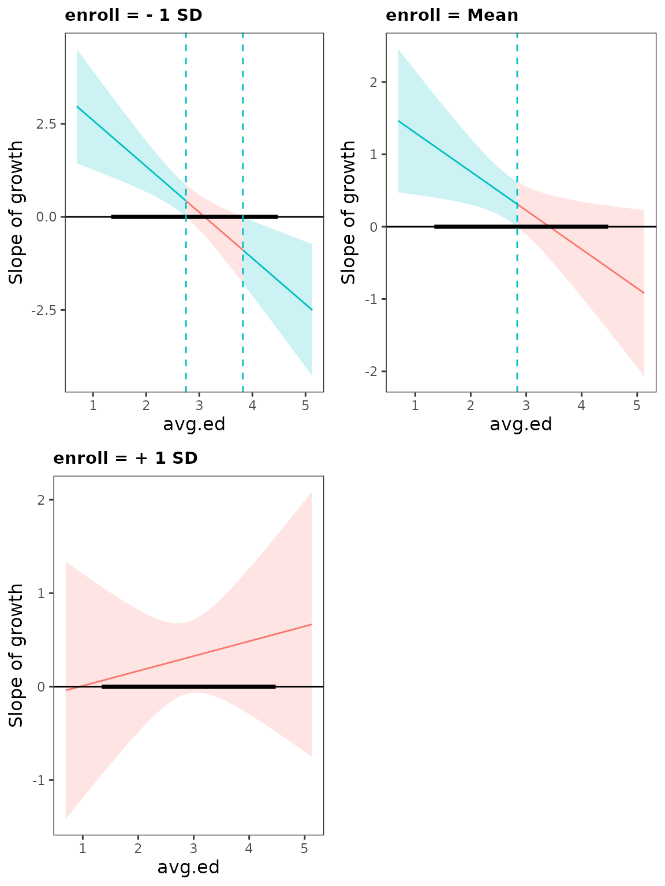
Notice that at one of the three values of the second moderator, there were no Johnson-Neyman interval values so it wasn’t plotted. The more levels of the second moderator you want to plot, the more likely that the resulting plot will be unwieldy and hard to read. You can resize your window to help, though.
You can also use the plot and as_huxtable methods with 3-way sim_slopes objects.
ss3 <- sim_slopes(regmodel3, pred = growth, modx = avg.ed, mod2 = enroll)
plot(ss3)
as_huxtable(ss3)| enroll = 153 | |
| Value of avg.ed | Slope of growth |
| Value of avg.ed | slope |
|---|---|
| 2.09 | 1.25 (0.32)*** |
| 2.79 | 0.39 (0.22)# |
| enroll = 595.28 | |
| Value of avg.ed | Slope of growth |
| 3.49 | -0.48 (0.35) |
| 2.09 | 0.72 (0.22)** |
| 2.79 | 0.34 (0.16)* |
| enroll = 1037.51 | |
| Value of avg.ed | Slope of growth |
| 3.49 | -0.04 (0.24) |
| 2.09 | 0.18 (0.31) |
| 2.79 | 0.29 (0.20) |
| 3.49 | 0.40 (0.27) |
Generalized linear models, mixed models, et al.
interact_plot is designed to be as general as possible and has been tested with glm, svyglm, merMod, and rq models. When dealing with generalized linear models, it can be immensely useful to get a look at the predicted values on their response scale (e.g., the probability scale for logit models).
To give an example of how such a plot might look, I’ll generate some example data.
set.seed(5)
x <- rnorm(100)
m <- rnorm(100)
prob <- binomial(link = "logit")$linkinv(.25 + .3*x + .3*m + -.5*(x*m) + rnorm(100))
y <- rep(0, 100)
y[prob >= .5] <- 1
logit_fit <- glm(y ~ x * m, family = binomial)Here’s some summary output, for reference:
summ(logit_fit)## MODEL INFO:
## Observations: 100
## Dependent Variable: y
## Type: Generalized linear model
## Family: binomial
## Link function: logit
##
## MODEL FIT:
## χ²(3) = 33.99, p = 0.00
## Pseudo-R² (Cragg-Uhler) = 0.39
## Pseudo-R² (McFadden) = 0.25
## AIC = 109.38, BIC = 119.81
##
## Standard errors: MLE
## ------------------------------------------------
## Est. S.E. z val. p
## ----------------- ------- ------ -------- ------
## (Intercept) 0.58 0.25 2.27 0.02
## x 0.54 0.32 1.67 0.10
## m 0.86 0.33 2.62 0.01
## x:m -1.73 0.46 -3.79 0.00
## ------------------------------------------------Now let’s plot our logit model’s interaction:
interact_plot(logit_fit, pred = x, modx = m)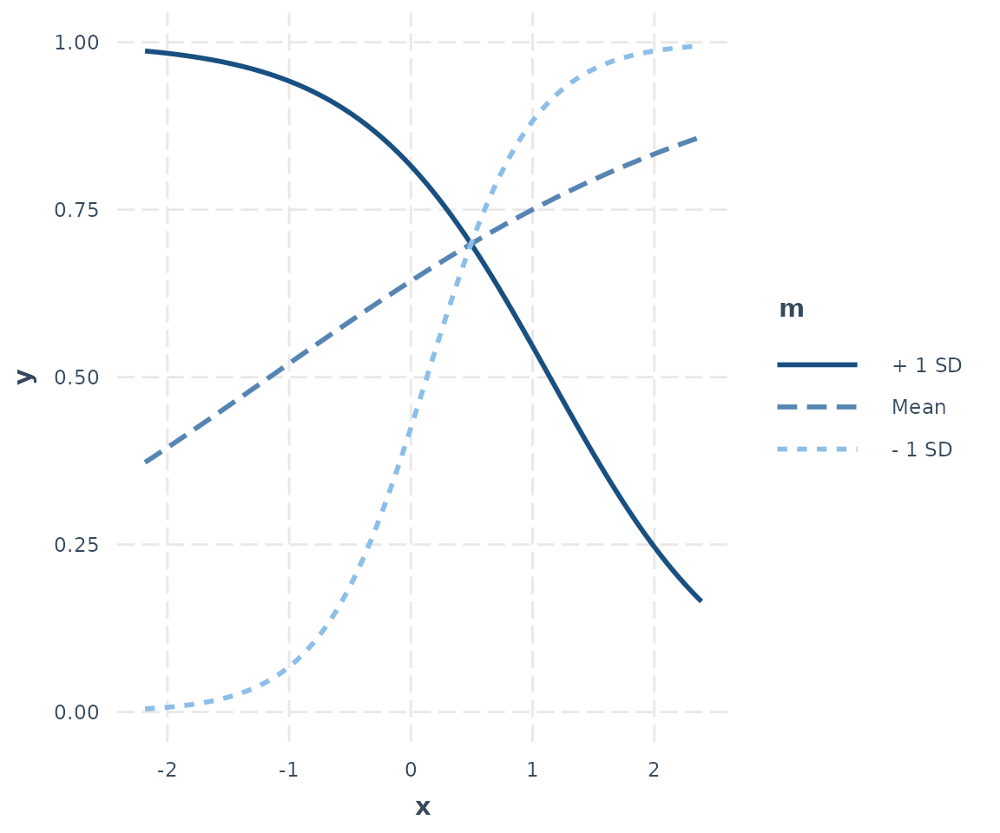
A beautiful transverse interaction with the familiar logistic curve.
References
Bauer, D. J., & Curran, P. J. (2005). Probing interactions in fixed and multilevel regression: Inferential and graphical techniques. Multivariate Behavioral Research, 40, 373–400.
Esarey, J., & Sumner, J. L. (2017). Marginal effects in interaction models: Determining and controlling the false positive rate. Comparative Political Studies, 1–33. https://doi.org/10.1177/0010414017730080
Fox, J., & Weisberg, S. (2018). Visualizing fit and lack of fit in complex regression models with predictor effect plots and partial residuals. Journal of Statistical Software, 87, 1–27. https://doi.org/10.18637/jss.v087.i09
Hainmueller, J., Mummolo, J., & Xu, Y. (2017). How much should we trust estimates from multiplicative interaction models? Simple tools to improve empirical practice. SSRN Electronic Journal. https://doi.org/10.2139/ssrn.2739221
Johnson, P. O., & Fay, L. C. (1950). The Johnson-Neyman technique, its theory and application. Psychometrika, 15, 349–367.